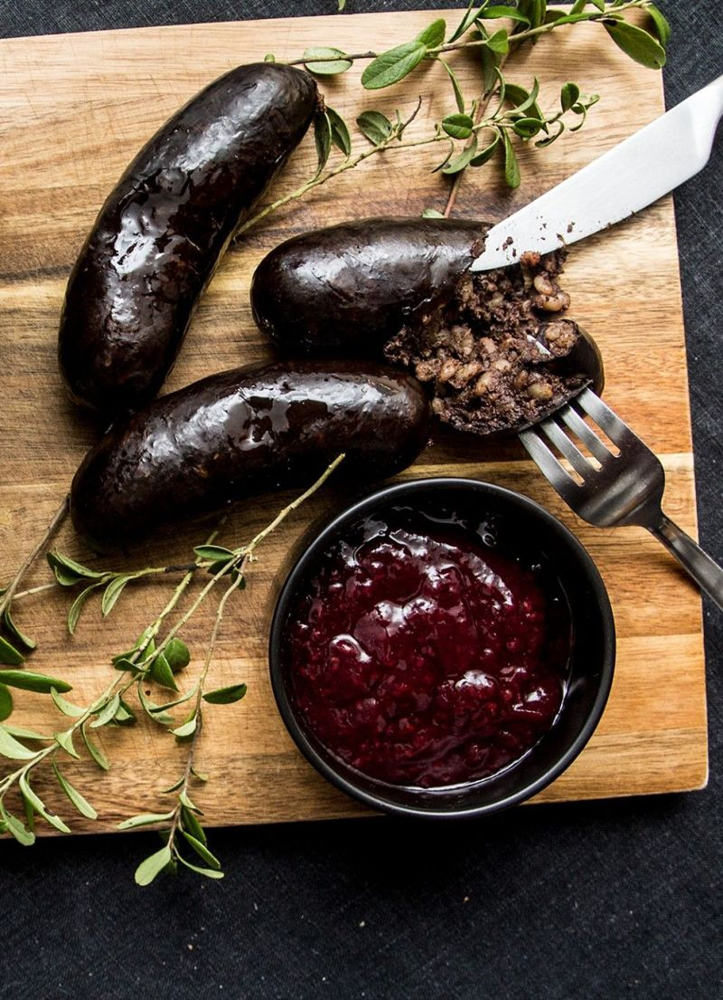

Recipe for blood sausage

Description
In Estonia, blood sausage (verivorst) is made of pig's blood, barley groats, pork, marjoram and other flavourings.
It is sold and eaten mostly in winter, being a traditional Christmas food. At that time there is a large variety of verivorst in stores, ranging in shapes and sizes.
Ingredients
- 1 cup of barley bran or barley groats
- 200-300g of pork flank meat
- 50g of smoked bacon to taste
- 1 onion
- 50g of butter
- Salt and black pepper
- Marjoram
- 250-300g of blood
- Pork or lamb intestines
Steps
- Wash barley groats or groats.
- Cut the pork and onion into small cubes, lightly fry in a pan.
- Boil the washed groats in broth or water, add the fried pork and onions.
- Cook over low heat until the groats are almost soft.
- Season the hot porridge with salt, black pepper and marjoram.
- Then cool the porridge and mix in the strained blood.
- Fill the intestines with blood porridge using a funnel and boil the sausages in water seasoned with spices and herbs.
- Cook on low heat for about 15-20 minutes.
- Cook the sausages in the oven until crispy before serving.